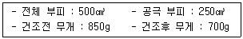
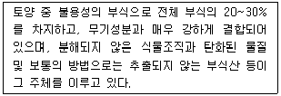
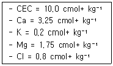

유기농업산업기사 (2007-03-04 기출문제)
1과목: 재배원론
1. 시비한 다음 토양 중에서 식물뿌리의 흡수작용이나 미생물의 작용에 영향을 미치는 생리적 산성비료는?
- 석회질소
- 황산암모니아
- 용성인비
- 질산암모이아
(정답률: 50%)

2. 고추, 벼(조생종), 메밀, 토마토 등은 식물의 일장 감응 9형 중 어디에 속하는가?
- LL형
- II형
- SS형
- LS형
(정답률: 알수없음)
3. 벼가 냉해를 받아 화분방출과 수정이 저해되었을 때, 이를 어떤 종류의 냉해라고 하는가?
- 지연형 냉해
- 병해형 냉해
- 장해형 냉해
- 복합형 냉해
(정답률: 91%)
4. 다음 중 작물의 원산지를 추정하는데 유전자 중심설을 제창한 학자는?
- DARWIN
- VALILOV
- De CANDLE
- MENDEL
(정답률: 85%)
5. 다음 작부방식 중 가장 일찍 실시되었던 농법은?
- 휴한농법
- 이동경작
- 개량 삼포식농법
- 자유 경작법
(정답률: 알수없음)
6. 다음 중 추락저항성이 요구되는 작품은?
- 벼
- 콩
- 포도
- 사과
(정답률: 59%)
7. 다음 수해에 관여하는 요인 중 작물적 요인이 아닌 것은?
- 작물의 종류
- 수온 및 수질
- 작물의 생육단계
- 작물의 품종
(정답률: 60%)
8. 강산성 토양에서 용해도가 증대되어 뿌리의 신장을 억제하는 원소는?
- Al
- Mg
- Fe
- B
(정답률: 79%)
9. 춘화처리의 농업적 이용으로 가장 옳은 것은?
- 채종상의 이요
- 춘파맥류의 추파 가능
- 내비성의 증대
- 출수개화의 지연
(정답률: 69%)
10. 사료작물을 용도에 따라 분류할 때 해당되지 않는 것은?
- 예취용
- 청예용
- 사일리지용
- 건초용
(정답률: 90%)
11. 모관수(capillary water)에 대한 설명 중 틀린 것은?
- 표면장력에 의해서 중력에 저항하여 보유되는 수분이다.
- 흡습수라고도 한다.
- 작물이 주로 이용하는 유효수분이다
- pF 2.7~4.5 이다
(정답률: 84%)
12. 비료의 행동을 정확하게 추적할 수 있는 방사성 동위 원소는?
- 11c, 14c
- 60co, 24na
- 32p, 42k
- 137cs, 35s
(정답률: 73%)
13. 다음 중 지온의 상승효과가 가장 적은 멀치 필름은?
- 백색필름
- 흑색필름
- 녹색필름
- 투명필름
(정답률: 70%)
14. 저온이나 장일을 대체하여 화성을 유도, 촉진하는 호르몬은?
- ABA
- 지베렐린
- 사이토카이닌
- 에틸렌
(정답률: 알수없음)
15. 씨 없는 포도를 유기하는데 가장 적합한 호르몬은?
- GA
- Auxin
- Ethylene
- Kineitin
(정답률: 알수없음)
16. 다음 중 간작(사이짓기)의 형태로 가장 적합한 것은?
- 맥류 – 콩
- 목화 - 참께
- 수박밭 – 옥수수
- 콩밭 - 수수
(정답률: 91%)
17. 다음 병충해 방제 중 경종적 방제법이 아닌 것은?
- 윤작에 의한 방제
- 담수처리에 의한 방제
- 혼식에 의한 방제
- 생육기 조절에 의한 방제
(정답률: 알수없음)
18. 벼의 일생 중 냉해에 가장 약한 시기는?
- 유수형성기
- 감수분열기
- 출수개화기
- 유숙기
(정답률: 70%)
19. 다음 중 블라스토콜린(blastokolin)이 의미하는 것은?
- 춘화처리 대체물질
- 발아억제물질
- 개화호르몬
- 유수발육 촉진물질
(정답률: 56%)
20. 온도와 광포화점과의 설명으로 옳은 것은?
- 광포화점은 온도와 이산화탄소 농도에 따라 변하지 않는다.
- 생육적온까지 온도가 높아질수록 광합성 속도는 높아지나 광포화점은 낮아진다.
- 냉량한 지대보다는 온난한 지대에서 더욱 강한 일사가 요망된다.
- 대체로 일반식물의 광포화점은 전광의 80~100% 이다.
(정답률: 100%)
2과목: 토양비옥도 및 관리
21. 토양의 입단구조 및 유지에 유리하게 작용하는 것은?
- 옥수수를 계속 재배한다.
- 논에 물을 대어 써레질을 한다.
- 퇴비를 시용하여 유기물 함량을 높인다.
- 경운을 자주 한다.
(정답률: 87%)
22. 토양생성학적인 층 위명을 O, A, B, C 및 R로 표시할 때, 다음 중 규산염점토, 철-알루미늄 등의 산화물, 유기물 등이 집적되는 토층은?
- A층
- B층
- O층
- R층
(정답률: 62%)
23. 다음 중 토양단면의 형태조사를 위하여 단면을 만들 때 고려할 사항으로 옳은 것은?
- 시갱(pit)을 하는데 깊이는 일반적으로 150 cm를 기준으로 한다.
- 시갱을 하기 힘든 곳에서 기존의 자연적 단면 또는 도로를 만들 때 들어난 단면을 이용하여 조사해서는 안 된다.
- 지형을 고려하여 대표적인 장소를 선정하여 시갱한다.
- 시갱할 때 지하수위가 높아 물이 고이는 곳은 수면 위로 들어난 곳만 조사한다.
(정답률: 알수없음)
24. 볏짚을 구성하는 성분이며, 미생물 등에 의한 분해 저항성이 가장 큰 물질로서 식물세포보다는 토양유기물로 존재할 때 성분 함량이 증가되는 것은?
- 단백질
- 리그닌
- 셀루로오즈
- 헤미셀루로오즈
(정답률: 100%)
25. 다음 중 질소고정균이 아닌 것은?
- 아조토박터
- 티오바실루스
- 메틸로박터
- 니트로박터
(정답률: 50%)
26. 토양생성에 관여하는 5대 요인은?
- 모재, 부식, 기후, 수분, 지형
- 모재, 지형, 식생, 부식, 기후
- 모재, 기후, 시간, 부식, 식생
- 모재, 지형, 기후, 식생, 시간
(정답률: 65%)
27. 논토양에서 탈질이 가장 용이하게 일어날 수 있는 층은?
- 담수층
- 표층
- 산화층
- 환원층
(정답률: 47%)
28. 지각을 구성하는 광물 중 그 함량이 가장 많은 것은?
- 석영
- 운모
- 각섬석
- 장석
(정답률: 80%)
29. 토양유기물의 역할에 관한 설명으로 틀린 것은?
- 토양의 완충능력을 증가시킨다.
- 토양구조의 발달을 촉진한다.
- 유기물의 탄질률이 높으면 무기질소가 증가한다.
- 토양내 환경오염 물질의 용탈을 줄인다.
(정답률: 80%)
30. C/N 비율이 116:1인 밀짚을 토양에 넣었을 때 토양에서 일어날 수 있는 현상으로 옳은 것은?
- 유기물 분해가 빠르게 일어난다.
- 토양미생물 활동이 활발해 진다.
- 식물과 미생물 사이에 질소경합이 일어난다.
- 공중질소 고정량이 증가한다.
(정답률: 58%)
31. 식물잔재와 같은 신선유기물이 부식으로 변화하는데 직접 영향을 미치는 요인이 아닌 것은?
- 유기물의 탄질률
- 토양의 온도
- 미생물의 합성
- 양이온 치환용량
(정답률: 알수없음)
32. 토양유기물의 함량을 유지시키거나 높이는 방법으로 틀린 것은?
- 토양 경운을 가급적 자주 한다.
- 녹비작물을 재배 후 갈아엎는다.
- 토양의 침식을 막아준다.
- 산소의 공급을 줄인다.
(정답률: 91%)
33. 토양 시료의 조건이 다음과 같을 때 이 토양시료의 용적 밀도는?

- 3.40 g/cm3
- 2.80 g/cm3
- 1.70 g/cm3
- 1.40 g/cm3
(정답률: 59%)
34. 탈아미노작용이 일어나는 질소대사는?
- 암모니아화성작용
- 질산화작용
- 탈질작용
- 질소고정작용
(정답률: 60%)
35. 토양의 양이온치환용량(CEC)을 증대시킴으로써 기대할 수 있는 가장 큰 효과는?
- 배수력이 좋아진다.
- 토양 수분 보유력을 증대시킨다.
- 토양의 식물양분보유량이 많아진다.
- 토양미생물 활동이 활발해진다.
(정답률: 알수없음)
36. 토양에 잔류하는 농약이나 영양분을 지하수로 이동시키는 데 있어서 가장 큰 역할을 하는 수분은?
- 모세관수
- 중력수
- 결합수
- 화합수
(정답률: 86%)
37. 다음 보기가 설명하는 부식의 성분은?

- 부식탄
- 풀브산
- 히마토멜란산
- 리그닌 단백질
(정답률: 75%)
38. 다음 조건일 때 이 토양의 염기포화도는?

- 50%
- 52%
- 60%
- 167%
(정답률: 70%)
39. 토양의 모재인 암석은 생성 과정에 따라 크게 화성암, 퇴적암 및 ( )의 3종류로 분류된다. ( )안에 알맞은 것은?
- 화강암
- 석회암
- 변성암
- 현무암
(정답률: 알수없음)
40. 다음 중 토양침식을 방지하기 위한 경작법이 아닌 것은?
- 등고선재배법
- 초생대대상재배법
- 승수구설치재배법
- 상하경재배법
(정답률: 82%)
3과목: 유기농업개론
41. 다음 중 반추가축이 아닌 것은?
- 한우
- 젖소
- 산양
- 말
(정답률: 75%)
42. 윤작의 필요성과 효과에 해당되지 않는 것은?
- 토양에 유기물공급은 물론 미생물조절에 의한 지력의 유지와 증진
- 경제성이 높은 단일작물을 계속 재배하여 토지생산성을 극대화시킴
- 타감작용에 의한 효율적인 잡초제어와 토양전염병 예방
- 농업생태계 회생을 기반으로 작물별 특성을 발휘시켜 수확량 증대와 품질향상 실현
(정답률: 80%)
43. 토양의 유기물이 부족할 때 일어나는 현상으로 틀린 것은?
- 토양 미생물의 활동 약화
- 토양의 입단구조 강화
- 토양의 척박화
- 토양의 보수력 감퇴
(정답률: 75%)
44. 토양산성화를 촉진시키는 요인이 아닌 것은?
- 산성비
- 화학비료
- 생활하수
- 석회시용
(정답률: 82%)
45. 다음 가축질병 중 인수공통 전염병이 아닌 것은?
- 탄저병
- 홍역
- 브루셀라병
- 결핵
(정답률: 90%)
46. 중금속오염 토양의 회복대책으로 틀린 것은?
- 석회질 재료의 투여
- 비료의 시용
- 객토 및 배토
- 생물학적 제거
(정답률: 알수없음)
47. 유기수도작에서 벼의 수량을 구성하는 4요소가 아닌 것은?
- 단위면적당 벼 포기 수
- 1개의 이삭에 달리는 벼 알 수
- 전체 벼 알 중 여문 벼 알의 비율
- 평균 벼 알 무게(평균 1립중)
(정답률: 75%)
48. 예방적 해충관리 방안 중 틀린 것은?
- 저항성 품종선택
- 기피작물 제거
- 저독성 천연물질을 이용한 해충방제
- 생태계의 종 다양성 확보로 해충피해 제어
(정답률: 47%)
49. 유기농업에 있어서 농약대체물질로 사용할 수 없는 것은?
- 천적
- 성유인물질
- 밀납
- 유기염소제 농약
(정답률: 80%)
50. 토양소독법 중 증기이용법에 대한 설명으로 틀린 것은?
- 토양을 침수시켜 열을 가하는 방법이다.
- 비용과 노력이 많이 소요된다.
- 소독효과가 확실하고 해작용이 없다.
- 소독 후 바로 이용할 수 있다.
(정답률: 알수없음)
51. 다음 중 석회보르도액의 사용으로 방제 효과를 얻기가 가장 어려운 것은?
- 보리 썩음병
- 사과의 흑점병
- 포도의 만부병
- 감귤의 총채벌레
(정답률: 84%)
52. 우량품종의 3대 구비조건으로 옳은 것은?
- 유전성, 적응성, 내병성
- 균등성, 우수성, 영속성
- 다수성, 내비성, 유전성
- 우수성, 지역성, 유전성
(정답률: 75%)
53. 유기농업에서 토양비옥도의 유지 및 증진 수단으로 적합하지 않은 것은?
- 피복작물의 재배
- 적당한 경운
- 녹비작물의 재배
- 4종 복합비료의 시용
(정답률: 73%)
54. 국내에서 유기농업 또는 환경농업에 의한 유기벼 생산방법 중 잡초 및 유해충 제거, 분의 배설에 의한 시비의 효과를 가장 크게 기대할 수 있는 농법은?
- 자연농법
- 태평농법
- 우렁이농법
- 오리농법
(정답률: 75%)
55. 페로몬의 주요 특징이 아닌 것은?
- 작물이나 인체에 무독하다.
- 유용곤충에 피해를 주지 않는다.
- 종 특이성이 비교적 약하다.
- 곤충의 체내에서 발생한다.
(정답률: 92%)
56. 기지현상 때문에 한번 재배하고 난 후 10년 이상 휴작을 요구하는 작물은?
- 쪽파, 시금치, 콩
- 마, 감자, 오이
- 아마, 인삼
- 쑥갓, 토란, 참외
(정답률: 알수없음)
57. 다음 중 유기농업과 관련된 국제 활동조직의 명칭은?
- ILO
- IFOAM
- ICA
- WTO
(정답률: 84%)
58. 유기축산의 사육시설로서 부적합한 것은?
- 가축에게 자연적인 행동이 가능하도록 충분한 공간 부여
- 가축에게 개체별로 케이지 사육 공간 부여
- 사료와 식수를 자유롭게 섭취할 수 있는 공간 부여
- 충분한 자연환기와 빛이 유입되는 공간 부여
(정답률: 93%)
59. 수분으로 포화된 토양으로부터 증발을 방지하면서 중력수를 완전히 배제하고 남은 수분상태는?
- 중력수
- 유효수분
- 위조계수
- 포장용수량
(정답률: 70%)
60. 옥수수와 원예식물에서 많이 이용되고 있으며, 최근에는 벼에서도 이용하고 있는 육종 방법은?
- 여교배 육종
- 집단 육종
- 계통 육종
- 하이브리드 육종
(정답률: 84%)
4과목: 유기식품 가공 유통론
61. '유기'라는 용어를 제품명의 일부로 사용할 수 있고 용기-포장의 주표시면에 표시할 수 있는 경우는?
- 해당 식품의 제조-가공에 사용한 원재료의 97%가 유기농산물인 식품
- 해당 식품의 제조-가공에 사용한 원재료의 80%가 유기농산물인 식품
- 원재료에 비유기농산물의 함량이 5%로 혼합되어 있는 식품
- 원재료에 비유기농산물의 함량이 30%로 혼합되어 있는 식품
(정답률: 93%)
62. 포장 재료로서 종이의 특성이 아닌 것은?
- 원료를 쉽게 구할 수 있다.
- 작 구겨져 기계적으로 가공하기 쉽다.
- 기체를 투과시키지 않아 식품 보존성이 좋다.
- 인쇄 적성이 좋다.
(정답률: 93%)
63. 다음 중 인삼캔디류에서 검출되지 않아야 하는 것은?
- 조단백질
- 감미료 둘신
- 조지방
- 식용색소 황색 제4호
(정답률: 50%)
64. 국제식품규격위원회에 의한 HACCP의 7원칙에 해당되지 않는 것은?
- 제조공정흐름도 작성
- 기록보관 및 문서화 시스템의 설정
- 중요관리점의 결정
- 관리기준을 결정
(정답률: 63%)
65. 가스치환포장에 사용되는 가스에 대한 설명으로 가장 거리가 먼 것은?
- 식품의 품질유지 기간을 연장하는 역할을 한다.
- 일반적으로 가스 중 산소의 함유량이 가장 높다.
- 가스의 기체로는 CO2, N, O2, 에틸렌, Ar, He 등이 이용된다.
- 가스의 혼합으로 살충효과를 볼 수도 있다.
(정답률: 91%)
66. mycotoxin 에 관한 설명으로 잘못된 것은?
- 독소는 동물과 사람의 접촉으로 감염이 된다.
- 곰팡이가 생산하는 2차 대사 산물로 사람과 가축에 질병이나 이상생리작용을 유발하는 물질이다.
- 독소로 인한 식중독에 항생물질은 치료에 도움이 되지 않는다.
- 신경독으로는 patulin,citreoviridin 등이 있다.
(정답률: 30%)
67. 이타이 이타이병을 유발하는 중금속은?
- 납
- 수은
- 카드뮴
- 비소
(정답률: 67%)
68. 다음 중 소매업과 가장 거리가 먼 것은?
- 백화점
- 할인점
- 편의점
- 대리점
(정답률: 82%)
69. 식품생산물이 잘못되었을 때 자발적으로 회사에서 회수하는 제도는?
- 품질관리제도
- HACCP
- 리콜제도
- 위해식품 신고제도
(정답률: 93%)
70. 유기가공식품의 제조-가공을 위하여 사용할 수 있는 가공보조제와 그 기능을 옳게 연결한 것은?
- 염화칼슘 - pH 조정제
- 황산칼슘 - 용매
- 탄닌산 – 여과보조제
- 동물유 - 유연제
(정답률: 알수없음)
71. 저 농약 농산물을 가장 잘 설명한 것은?
- 1년 이상 유기합성 농약과 화학비료를 일체 사용하지 않고 재배한 농산물
- 전환기간 이상을 유기합성 농약과 화학비료를 일체 사용하지 않고 재배한 농산물
- 유기합성 농약은 일체 사용하지 않고 화학비료는 권장시비량의 1/3 이내 사용하여 재배한 농산물
- 화학비료는 권장시비량의 1/2 이내로 사용하고, 농약 살포횟수는 농약안전사용기준의 1/2 이하로 사용하여 재배한 농산물
(정답률: 50%)
72. 식품공전상 식품의 농약잔류시험법에 이용되는 장치는?
- 증류식 수분정량 장치
- 가스크로마토그라프 전자포획검출기(ECD)
- 세미마이크로킬달 장치
- 가스크로마토그라프 질량분석기(GC/MS)
(정답률: 82%)
73. 유기농산물과 일반농산물이 구별되는 가장 본질적인 차이는?
- 유통경로
- 재배방법
- 서비스 수준
- 신선도
(정답률: 82%)
74. 우리나라의 농산물 유통경제의 특성과 거리가 먼 것은?
- 공급자는 영세하고 다수이다.
- 지역적 특화, 산지 분산적이다.
- 표준화, 규격화, 등급화가 용이하다.
- 일상 필수품으로 구매 빈도가 높다.
(정답률: 72%)
75. 식품공전상 일반적인 냉동식품의 보존용도는?
- -10`C 이하
- -15`C 이하
- -18`C 이하
- -25`C 이하
(정답률: 80%)
76. 탈삽(감우리기)하는 방법 중 화학약품을 사용하지 않고 효소의 활동만을 이용하여 유기 식품 제조에 가장 적합한 것은?
- 알코올법
- 탄산가스법
- 아세틸렌가스법
- 온탕법
(정답률: 알수없음)
77. 유기가공식품의 가공에 대한 내용으로 옳은 것은?
- 염화나트륨의 사용을 허가한다.
- 일반 식품가공에 사용하는 착향료의 사용을 일체 금한다.
- 모든 질소화합물의 사용을 금한다.
- 원재료 및 보조 재료에 방사선 처리를 허용한다.
(정답률: 64%)
78. 식품첨가물 중 천연향산화제와 가장 거리가 먼 것은?
- BHT
- tocopherol
- gallic acid
- lignan
(정답률: 알수없음)
79. 살아있는 식품이나 살아있지 않은 식품에 적용되며, 통상 인공적으로 가스공급장치를 갖춰 냉장고나 저장고 내에 주입시켜 온도와 습도를 유지하면서 대량으로 저장하는 저장법은?
- 저온저장
- CA 저장
- MAP 저장
- 냉장저장
(정답률: 94%)
80. 다음 중 솔라닌(solanine)에 의해 유발되는 식중독과 가장 관계가 깊은 작물은?
- 감자
- 고구마
- 오이
- 토마토
(정답률: 90%)